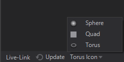
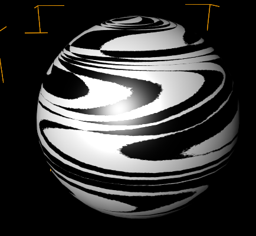
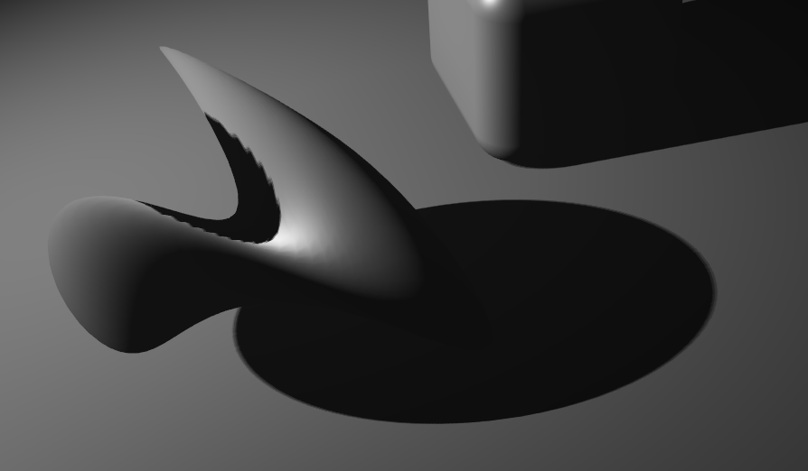

Material
Table of Contents
- General
- Extraction
- Lighting Models
- Alpha Options
- Material Stages
- Shadow Options
- Helpful References
| Alpha | Changes the Alpha Options. | |
| Solid Color | Changes the Lighting Model to No Light and applies a color. | |
| Color | Inherits the Lighting Model and applies a color. | |
| Material | This is used to start creating a material for a surface consisting mainly of the Lighting Model and Material Stages. | |
 | Texture | Adds a Texture Material Stage to all children 3D objects. |
| Flipbook | Loads and applies a sequence of images to an object. |
The Alpha, Solid Color, Color, Material and Texture Nodes generally change the shading of the geometries. They are Aliases of the Material Node that is also able to change the rendering behavior of objects. These options are documented on the respective pages (for references see the table below).
General
The Material Node controls the appearance of the surface of each rendered Object placed as a child in the Hierarchy. It consists of several options that can be added to its list of properties to overwrite the according options. The options are available under Material Node's Tabs that are represented by the button bar on top of the Material Definition in the Property Editor.
Generally these tabs exist:
| Standard | affects the overall transparency | |
|---|---|---|---|
changes how light affects the color of a surface | |||
adds textures and material stages that change the shading | |||
| Shadow Options | changes the shadow related behavior | |
| Drawing Style | applies a draw mode for geometries (lines, solid, sprites etc.) | |
| Blending | changes the write mode to specified color channels | |
adjusts the blending of geometries onto the background | |||
| Testing | applies a custom test against the object's alpha | |
defines a custom occlusion test for the geometry |
To show the options of a tab simply click on the according button. You can insert options by clicking on the Property Group's entry and choosing the wanted options from the dropdown.
All options that you do not adjust in a Material node are inherited by the Default Material or the Material node in front.
Icon and Decoration
In general the Icon rendering can be changed by switching between Sphere, Quad and Torus at the bottom of the Properties Editor or via .

Based on the Property Groups that are used inside a Material Node the Icon may change.
| Rendered Preview | if only Property Group's in the Standard or Shadow Options tab are used. |
|---|---|---|
| Rendered Preview with light blue decoration | if Property Group's in the Standard or Shadow Options tab are used together with any other Option like a certain Draw Mode or a certain Blending |
| Dedicated Option Icon | every Material Option has it's own dedicated Icon, that is shown whenever no other Property Group in any other tab is used. |
Extraction
Material Definition
A Material node is a Hierarchy Node by nature. But it can serve as a Material Provider as well. This is useful whenever you want to use the same material in different locations of your hierarchy or once you have Hierarchy Nodes that need more materials than one applied to it (e.g. the Particle System Node). The below image shows both a Material Node and an extracted Material Node Provider together with a receiving Material Node.
You can either place the Material node in the Content Editor to create an unbound Material Provider node. Or you can use the extract button on any node that hosts a Material Definition to extract it to a provider that can be re-used on other nodes.
Material Options
Since a Material consists of several options sometimes you want to extract some of them to a seperate Hierarchy Node. This way you can apply single Material Options to other parts of the Hierarchy Tree when already added to the Material. Just use the extract buttons next to the Material Options.
Lighting Models
The lighting model defines the rules about how material and light interacts. In the shader, each light source calculates its contribution to diffuse, ambient and specular light depending on distance and the angles between surface, eye and light.
Ventuz features various Lighting models that can be applied to any material node. Lighting models work in the same way as layers or material stages. They can be switched ON/OFF or a specific Lighting Model can be selected. (See image below)
Inherit
This inherits the Lighting Model used in the scene or the Material Node in front. This is the default of the Lighting Model.
Base Color
The Base Color Mode inherits the Lighting Model used in the scene or the Material Node in front but is able to overwrite its Base Color property and Opacity. This can e.g. be used to quickly change the color of a 3D Object very quickly.
The Base Color sets the color used when a pure white light hits the surface. You can define a custom color by typing in values or use the color picker. It is also possible to type in a Color Name directly. A complete list with supported color names can be found here.
With Opacity you can control the translucency. This will create a transparent object but keeps the specularity. For example, you would adjust this value to create a glass bottle material. You can not specify a different specular color here, this would be inherited by the specular color defined in the Lightsources Properties.
No Light
This is the simplest lighting model. It ignores all light sources and uses only the base color as a solid color. Again you just have the Base Color and Opacity properties. See Base Color.
The No Light lighting model is like a self-illuminated material.
Gouraud
Gouraud Lighting model does a simple light calculation that does not create a specular highlight, this results in a smooth lighting.
The Base Color is used for the colorization of the material's diffusion, and Opacity again changes its transparency, see Base Color.
Gouraud adds Emissive and Ambient color to the material properties.
The Ambient allows editing the color used for the ambient areas. The ambient color is used to shade the parts of the mesh that face away from the light. Ambient is multiplied with a base color, so the ambient can never be brighter than the diffuse part. NOTE: You must have an Ambient Color defined in the Lightsources' Properties since it is also multiplied with that.
The Emissive color will be added to the resulting material's color without any influence from a light source.
With the Options drop-down menu you can enable FlatShading which renders each polygon as a flat surface, with no interpolation of the normals to generate smooth surfaces. TwoSided enables two sided lighting. It lights each (unculled) polygon a second time with the opposite vector of its normal. You will need this whenever you use the backface of a polygon and want it lighted properly. The most common case where you would need this is while you create transparent objects. With the Render Solid Node set the culling to None (to see the back facing polygons) and have them lit by a light source. On the right of the image below you can see that the inner side of the polygons of the transparent sphere are bright when the outer side is facing towards the light. On the left they are bright when they themselves are facing towards the light which leads to a more correct result (but also a higher performance consumption).
For more information on Gouraud Shading see Wikipedia: Gouraud Shading.
Phong
The Phong lighting model adds a specular reflection, where specular color and specular power can be edited and controlled separately.
Specularity changes the color of the specular spot on your material and is depending on how far to the light the corresponding polygon is facing to the light and this Light Source's Specular Channel.
Sharpness controls the areas that are highlighted by the specular and the transition to darker areas.
When using the Image Based Lighting or the SkyBox, the Roughness value will control how rough (1) or shiny (0) the reflection is. Roughness and Sharpness express similar properties in a different way. Roughness will only work with Image Based Lighting while sharpness will only work with the Phong-highlight. If you add a Material Stage roughness, the value will by default be added to the texture supplied by the Material Stage. You would have to set that value to (0) then.
For more information on Phong Shading see wiki Phong Shading.
Incidence Lighting
The Incidence Lighting Model is the most flexible and powerful one. In it, the color and specular are driven by gradient textured, rather than single colors. The gradient range depends on the angle of the light to the surface of the object. The Incidence Lighting Model can accept one or two 1D gradients or textures or one 2D texture. We recommend that you try the available presets or have a look at the provided interactive example scene to get a feeling for the effects that can be created.
For Incidence Light a list of presets are available for quick picking. The available options are BlueBack, Rainbow, Anisotropic and Colourful. Each is using the same values except the used textures to create the incidence effect.
The Incidence Lighting Model uses the same set of properties like the Phong. Please see the Phong Shading for a list of properties available.
In addition, Incidence Lighting opens two Loaders that enable the loading of textures used to drive the Color and Specular areas of the lighting. The LOADER 1 controls the Color of the BaseColor. When you use only a single 2D texture, it will derive both Color and Specular from the same texture, so it will use the first horizontal line values for the color gradient. Therefore, we recommend using 1D textures instead, since they allow individual and more accurate controls for both Color and Specular. The LOADER 2 controls the Specular. When you use only a single 2D texture, it will derive both Color and Specular from the same texture, so it will use the first vertical line values for the specular gradient. Therefore, we recommend using 1D textures instead, since they allow individual and more accurate controls for both Color and Specular. The LOADER 2 has 2 more properties to control. FlipSpecular is a switch to flip the values of the texture that is used to control the Specularity. With the FullRange switch, you extend the range of values to be mapped from 0 to 180 degrees, allowing for light to be present in the shadowed side.
Ventuz provides a set of default textures for the Incidence Lighting.
Alpha Options
The Alpha controls the transparency of all subsequent objects in the Scene Hierarchy. To achieve the correct transparency effect, the correct drawing order must be heeded. Transparent objects must be rendered after the objects that lie behind them. For more information, see Introduction to Realtime Rendering.
The AlphaValue controls the overall Alpha transparency expressed as percentage. This value can also be used to animate the material transparency as a whole. The AlphaFlags drop-down menu allows checking options that will affect the Alpha calculation. Relative to base alpha specifies how the resulting alpha value is calculated if more than one Alpha node affects an object. In the Relative mode (flag checked) the Alpha values are multiplied. In the Absolute mode (flag unchecked) the last Alpha node specifies the transparency and all earlier nodes have no effect anymore. Block on full transparency will cause the subsequent tree to be blocked and thus neither validated nor rendered if the AlphaValue is set to 0%. This is a performance optimization but can have unintended consequences, e.g. blocked objects are no longer touchable. For example, you would need to uncheck Block on full Transparency in order to have invisible touch areas. Improve transparency prevents the interior of the object from becoming visible on concave meshes. See also Mesh Loader.
The Alpha Value will affect every pixel of the affected objects, including all lighting, texturing etc. applied to them. In order to ignore, e.g. specularity for a glass-like effect, the Opacity property in the Lighting Model or an Opacity Texture can be used.
Material Stages
The layered material approach in Ventuz enables the creation of very complex materials that combines many textures and effects into one single material node. All these texture layers or effects are called Material Stages, and each one features has its own properties and options.
To understand how the Layering of these Material Stages in Ventuz works, have a look at the following screenshot. Please note, the Material Stages in Ventuz are Order independent. Therefore you can add any stage at any point and the engine will set its order internally.
The following Screenshot shows how a complete set of material stages work, the material is used in an HDR Environment:

By default, Ventuz materials present no Material Stage in the Material Stages list, so click on the + Material Stage button to select one from the context menu. Material Stages can be changed, reordered or even deleted at any time - see figure below for the different interface areas and their functionality.
By long-clicking you can bring up a context menu giving you control over the Material Stages. You can clone with or without Bindings and move the Material Stage up and down.
Except for Vertex- and Perlin Vertex Noise (which are Vertex Shaders) ALL Material Stages are working with the same structure or principle. To get a better understanding on how a Material Stage works, have a look at the following diagram and the description below:
The first step is always to load a texture. Any kind of Material Stage must contain a Texture, even a generated 1D Gradient is a Texture. After a Texture has been loaded it will be Sampled and Mapped onto a Polygon - Here you can decide HOW it should be projected onto the Polygon. E.g. you could set the Sampler to an Advanced Mode and define to Wrap the texture around the UVW. If you, for instance, decide to change the Position of this texture, it will Wrap around and repeat itself. In some Controls you can decide how Intense the Texture will be projected onto that polygon or the surface. For some Material Stages, you have different controls. At the end you have to Assign that Texture into a Slot - which is handled separately for the Color and the Alpha of the Texture. For example, you could assign the Color of a Texture to go into the BaseColor Slot, while the Alpha has to control the Roughness.
The maximum amount of Material Stages is limited to 8 per polygon. This is set by the Engine
If you use a SkyBox the maximum amount of Material Stages is 6 since the SkyBox consumes 2 Material Stages: 1 Stage for the Irradiance Texture, 1 Stage for the Specular Environment
Material Stage Properties
As you can imagine, every Material Stage contains of a Texture,Mapper,Sampler,Destination and Amount Property. The following explains their general purposes and properties.
In each Material Stage type, the Amount Property sets the resulting amount or intensity of the material stage by interpolating between the results without and with the Material Stage.
Texture Source
If the Stage needs a Source, this is where it can be set. There are many sources for a texture in Ventuz, from an image to live video, but they generally fall into the following categories.
Each one of the Texture Source property groups provide a texture to the containing node that is used in one way or another. This page gives an overview of the different types of property groups.
Texture Loader
The Texture Loader directly loads a texture of any supported type from file and provides it as a texture to the containing node. The File property changes the loaded image. The Hint property will change how the loaded file is handled internally while the texture is generated. See Texture Loader Node for more information on the Gamma and Alpha Hints used when loading a texture.
The Presets of this Node are specific internal Texture Files that are always available in the Ventuz Runtime.
Loader
These images can be used for several different general purposes like generic textures or placeholders and testing.
|
|
|
|
|
|
|
|
|
| ||
|
|
|
| ||
|
|
|
| ||
|
|
|
|
| |
|
|
|
| ||
|
|
|
| ||
|
|
|
| ||
|
|
|
| ||
|
|
|
| ||
|
| ||||


IPP
These images are intended to be used by Ventuz' Image Post Processing Effects, e.g. the Lensflare effect.
|
|
|
|
|
|
|
|
|
| ||
|
| ||||


Lighting and Shaders
These images are best used by texture based Lighting Models and specific shaders, like e.g. the Incidence Lighting Model or the Hatch Texture Node.
Lighting
|
|
|
|
|
|
|
|
|
| ||
|
|
|
|
| |
|
|
|
| ||
|
|
|
| ||
|
|
|
| ||


Shaders
|
|
|
|
|
|
|
|
|
| ||
|
|
| |||


Texture Property
The Texture Property Property Group provides only an Input for any Texture coming from the scenes logic, e.g. a Texture Loader Node. This is necessary for some source types like movies but may also be useful whenever you need to apply some logic to loaded textures before applying them to objects. The Presets generate the according Content Node together with the Property Group and bind its Input Property to that new node.
1D Gradient
The 1D Gradient generates a linear gradient. It can be edited using the Gradient Input - clicking on the down arrow on the left of the property will open up the Gradient Editor. The Vertical flag changes the alignment of the generated 1D gradient.
SVG Loader and SVG Text
The SVG Loader and SVG Text Property Groups rasterize an SVG file and provide the rasterized graphic. See the SVG Loader Node for more information.
Other
The images in this category are defaults for other kinds of texture usages, like the rasterization of SVG Files.
|
|
|
|
| |

Texture Array Loaders
The Texture Array Loaders are able to generate a List of Textures instead of only a single texture. This can be used by a Material with a Flipbook Control to display one of the loaded textures after another. Or you can use it with a Particle System to display a different texture for each particle using the Animation attribute of a particle.
Flipbook Loader
The Flipbook Loader is able to generate an Array of Textures from the given source file. This can either be a Movie file or an Image Sequence. For best results and performance, consider the following:
- The Movie file is loaded into the GPU memory completely instead of streaming only the needed portions like the Movie Clip Node. So always use small movie files. Also remember that compression does not change the size on the GPU since it will be decoded before.
- The Movie file should not use lossy compression to make sure each frame looks fine and can be used on its own. E.g. the Apple Animation Codec for Quicktime files could be used for that.
- An Image sequence can be loaded by selecting one of the images of the sequence. They have to have the same names with an index at the end of the name. For example PictureXXX.png with XXX being the index of that image.
- The Images in the given sequence need to be of the same dimensions. Otherwise the GPU cannot create a Texture Array of the given source files.
Strip Loader
Similar to the Flipbook Loader the Strip Loader will create an Array of Textures. This texture loader divides a single Image into evenly sized textures. You can define the number of textures with the CountX and Y properties and remove single slots at the end with the Reduce property. The frames are read line by line, so the first frame is at the top-left slot and the second frame is at the slot right to that.
It is used similarly to the 2D Strip Mapper of the Material Node. The difference is that the Strip Loader can be used by the Particle System to use different portions of an Image for each particle.
Flipbook
The images in this category can be used by the Flipbook Loaders.
|
|
|
|
| |

Sampler
Most of the Material Stages also will need a Sampler. In this slot you can put one of the follwing Property Groups.
Simple
The Simple Sampling will allows you to access the modes you will need in everyday work without having to get into the more complex parameters and in an advanced mode. The presets are Simple Wrap and Simple Clamp.
The Type shows the filtering options currently selected for Filtering and Mapping (see below). By clicking the arrow a drop-down menu appears showing all the options available for both Filter and Mapping. Filter: When 2D images are mapped onto 3D objects and moved in 3D space, they no longer will match pixel by pixel. Thus, the engine needs to define how the pixels are interpolated and calculated. The Filters available are:
- Point Filter: This is the most simple filtering technique used in Ventuz, with the best performance, but the quality can be not ideal. This technique will not interpolate between the available pixels on the texture. So whenever you sample between pixels, it will just use the information of the nearest pixel.
- Bi-Linear Filter: Is a texture filtering method used to smooth textures when displayed larger or smaller than they actually are. Bilinear filtering is rather accurate until the scaling of the texture gets below half or above double the original size of the texture. In general, mipmapping is used to provide a scaled-down version of the texture for better performance; however, the transition between two differently-sized mipmaps on a texture using bilinear filtering can be very abrupt.
- Tri-Linear Filter: Is an extension of the bilinear texture filtering method, which also performs linear interpolation between mipmaps, making the mipmap transition smooth throughout.
- Anisotropic Filter: This is the most computationally intensive and highest quality filter available in Ventuz. It eliminates aliasing effects but improves on other techniques by reducing blur and preserving detail at extreme viewing angles.
- Point Filter, No MipMaps: This combines the basic Point Filtering of textures and does not use mipmaps for streamlining performance.
In the Mapping Property Group you define what happens when the image does not fill the bounds of the area it needs to fill. Is it repeated, or simply applied as a decal, for example. These options interact with the Mapping parameters set below, so, for instance, you must scale down or re-position your texture to see how it tiles.
- Black/White/Transparent Border: These three settings are pretty much self-explanatory, some presets
- Wrap: Repeats the texture in a tile-like fashion.
- Clamp: Simply repeats the edge pixel values on each edge.
- Wrap U, Clamp V: A mixture of the two above, tiles in U axis and clamps (no tiles) in V axis.
- Clamp U, Wrap V: A mixture of the two above, clamps (no tiles) in U axis and tiles in V axis.
- Mirror: Tiles the texture like wrap, but flips the image for each tile repeat.
- MirrorOnce: Mirrors the texture to be tiled just once.
Advanced
You can also switch to the Advanced mode which lets you tweak individual elements with more control than the simple mode. It requires you to understand the mechanics behind real-time 3D rendering techniques. In general, these parameters allow you to tweak the mipmap generation and the filtering method options used to interpolate between them. These are the parameters available:
- Border Color: A standard color picker used to define the color value of a texture border if an appropriate U/V/W mode is selected.
- Address U, V, W:Three drop-down lists used to pick up the tiling methods used for U, V and W axis. The methods are the same used in Simple Sampler above, so they are Wrap, Mirror, Clamp, Border and Mirror Once.
- MaxFilter: A drop-down list used to pick up the Filter used f. The available options are similar to Simple Sampler above, they are None, Point, Linear and Anisotropic.
- MinFilter: The available options are similar to Simple Sampler above, they are None, Point, Linear and Anisotropic.
- MipFilter: The available options are similar to Simple Sampler above, they are also None, Point, Linear and Anisotropic.
- Mipmap LOD Bias: This option shifts between the MipMap levels. You can adjust the blending here.
- MaxAnisotropy: Defines the maximum Anisotropy level to be used.
- MaxMipLevel: Defines the Maximum MipLevel to be used. If a Texture has 8 MipMap Level and you set this value to 4 it will blend to the maximum of level 4 and ignore the rest. The Texture will still be loaded with all MipMaps, therefore you do not save Memory.
Mapping
The Mapping property group changes which pixels of a texture are applied to which parts of the 3D Object it is used on.
In all Mapping modes, textures can be tweaked and properly placed by using the Alignment, Position, Scale and Rotation Parameters.
The Mapping has several options to choose from:
Simple
Simple Mapping just features a list of mapping presets that can be selected to quickly check some of the mapping methods - see below for more in-depth info. The ones available are UV0, UV1, Screen Aligned, World Space Reflection, Camera Space Reflection, Spherical and Spherical Simple.
2D Mapping
The 2D Mapping, maps the texture in a two-dimensional fashion, like a front projector. It is especially useful for flat surfaces. Please, have in mind that if the texture does not cover the object totally the texture will be repeated according to the options set in the Sampling Property Group.
2D Mapping features some presets that can be selected to use different 2D mapping methods, the ones available are UV0, UV1, UV Distorted and Screen Aligned. While UV0 and UV1 use the defined UV Sets of the geometry, UV Distorted will use the result of a UV Distort Material Stage. Screen-Aligned will align the UV Coordinates to the Screen, regardless of the geometry's transformation.
3D Mapping
3D mapping, maps the texture in a 3D space, so textures can be manipulated in all three axes. Please, bear in mind that if the texture does not cover the object totally the texture will be repeated according to the options set in the Type parameter above.
3D Mapping features some presets that can be selected to use different 3D mapping methods, the ones available are Model Space Position, World Space Position, Camera Space Reflection, Spherical and Spherical Simple.
Triplanar
TriPlanar renders the texture three times, each one projected from one of the three axes. Then it blends between these projections depending on each polygon orientation, this is good for topologies with steep sides, but the downfall is that it requires more computation and it can affect the performance. Keep in mind that if the texture does not cover the object totally the texture will be repeated according to the options set in the Type parameter above. The Blending at the corners can be adjusted by tweaking the Sharpness Value, this value is per default set to (2). The Higher the Value the sharper the blending will be, lower Values will result in a softer blending.
TriPlanar features two different 3D mapping methods, the ones available are Model Space and World Space.
Projection
The Projection mapping method uses a camera position as a projector that projects the texture onto the object. Define the Camera with the drop-down menu that selects the camera to be used as projector from a list of all the cameras available in the scene.
2D Strip Mapper
The 2D StripMapper is a specialized form of the 2D Mapping to handle tiled images and textures. The pattern can be adjusted with the available options.
TilesX/Y set the number of tiles in the X or Y axis, the resulting pattern gets scaled to match the size of the original texture. Values are expressed as Integers. You can Reduce the number of parts of the texture not filled with any content. Scaling controls the basic tile scaling. With Index you select the tile in the pattern to be displayed.
A special Mapping mode is the From Above. This mapping option copies the mapping method and settings used in the previous Material Stage.
Destination Channels
The Destinations of the Texture's Channels define where each value of the channels go. Depending on the Material Stage you can choose the destination for both, all Color Channels and the Alpha Channel:
- Target: this drop-down menu let you set the target of the RGB values.
- Operation: a drop-down menu to define the operator used to calculate the resulting pixel value.
- Masking: here you can mask our elements of the texture. The available options are off, Alpha uses the Alphachannel, Mask1/2 use the defined Mask1/2 (which are destination channels), and Texture Alpha uses the alpha from the texture. While the Inverse option inverts the Mask.
The different targets and operations work like defined in the lighting model. The Material Combination Diagram at the end of this document shows the work wise of the channels more detailed.
Texture
A Texture Stage will probably be the material stage used most often in a material. It will do nothing more than take a texture from the Texture Source property, sample and map it and then apply the RGB and A Channels to chosen Material Channels.
Normal Map
Normal Maps allow using specialized textures to simulate high degrees of detail without needing lots of complex geometry. While they create very realistic detail when looked at straight on, in profile they do not work because they are not actually changing the geometry. Normal maps are images that represent spatial transformations as color values, therefore each color channel represents the transformation in a 3D axis.
Normal maps have the same sampling and mapping options as ordinary textures. The Color target, operation and masking can not be set as the normal-map operation is set automatically. The Alpha target, operation and masking can be used by advanced users to utilize the alpha channel that is not needed for the normal map operation as an ordinary gray-scale texture (alpha, roughness, masking, etc.).
Normal Map has only an Amount which controls the strenght of the Normal Map. The Amount can also be negative.
Normal Map Generator is a simple way to author a normal map. Select the Normal Map Generator as texture loader and this will interpret the gray-scale value of an image as a height map and create a fitting normal map.
The Amount controls the strength of the effect, the bigger the value, the deeper the relief will look. Also, the amount can be a negative value to invert the direction of the normal map. With Filter you can select the filtering method used for the fake relief calculation. The available option are Soft (default, three pixel neighborhood) and Hard (two pixel neighborhood).
The Normal Map Generator will place the gray-scale value in the alpha channel, which is convenient for mixing displacement and normal mapping. The original alpha channel of the input texture is ignored.
UV Distort

The UV Distort Material Stage can be used to change a UV Set. The changed set can then be used by other material stages by changing the used UV Set to the UV Distorted Set in their Mapping Options.
Note that you will need to set the used UV Set of a Material Stage to UV Distorted in order to use the result of a UV Distort Stage. This way you can define which Stages should use the distorted set and which one should rather use the original one.
More technically spoken, the distortion works as follows: The Red and Green Channels of the texture are used to adjust the U and V coordinates respectively by addition. Before adding the Color Channel to the UV Coordinate Component it will subtract 0.5 from it: U' = R - 0.5 + U and V' = G - 0.5 + V. As a result, a solid 0.5 Grey will not change the UV Set at all.
Rotate changes the direction of the distortion. Note, that is different from changing the rotation of the mapping of the distorting texture. Alpha defines how to apply the otherwise unused Alpha Channel of the used Texture. The Amount scales the intensity of the distortion. Apply a negative value to invert the distortion.
Displacement Map
Sometimes also called a Height Map, unlike Normal maps, this map actually moves the vertex points and creates real geometry. Thus it is computationally quite a bit more intensive and furthermore, relies on having a high-resolution geometry under the map to support the detail.
In general, it features the same parameters available for any texture, so please refer to texture Material Stage for more information, with two additional properties:
Amount: controls the strength of the effect, the bigger the value, the more the vertices will be displaced. The Bias slider controls the offset of the geometry generated by the displacement - it is useful to compensate non-displaced areas of the geometry to get as close as possible to the original geometry.
Texture Set
Texture Sets allow loading a group of textures in one operation, without having to assign the correct texture for every Texture Stage. Merely select one of the textures and the rest will be loaded into their correct Texture Stages, according to the naming convention followed in the texture file names.
It is a powerful workflow tool that has been designed and tested with texture sets generated by Substance Painter, there is a preset available to generate all textures using the appropriate settings and naming conventions used by Ventuz. Basically, you just need to follow the Texture Naming Conventions listed below to have a set of textures loaded at once.
File is used to pick up any texture in the texture set. If the rest of the textures follow the right naming convention, they will be loaded and assigned to their correct texture targets automatically. With the Targets drop-down list you mark which textures are going to be loaded and therefore on which Texture Stages they will be applied. By default, all stages are marked. Simply uncheck the Stage you don't want to use and it will be unloaded from the memory. As you can see in the screenshot above, each target has a check mark before its name, to indicate that this texture will be loaded. No only the target name, but also the asterisk indicates that the texture is present in the selected texture set. The NormAmount controls the Amount of the Normal Map effect. Same goes for the DispAmount. This Value controls the Displacement Amount. DispBias offsets the whole displacement effect in the normals direction, higher values will move vertices outwards and lower values will move the displaced geometry inwards.
These parameters are common to other texture Stages like basic textures.
The Reload triggers a reload of all the Textures in the Texture Set.
Texture Set naming conventions
Standard Texture Sets
Textures with an added postfix meeting the following conventions will be automatically loaded and mapped into the channels:
| Postfix | Material Stage |
|---|---|
| _BaseColor.EXT | Base |
| _Normal.EXT | Normal Map |
| _Specular.EXT | Specular |
| _Gloss.EXT | Glossiness |
| _AmbientOcclusion.EXT | Base |
| _Metal.EXT | Base |
| _Roughness.EXT | Roughness |
| _Emissive.EXT | Emissive |
Compact Texture Sets
Work the same way like the "Standard texture sets".
Additionally, you can make use of the Alpha Channel inside a Base Texture and add a "grayscale" image like an Ambient Occlusion. If you meet the following criteria, it will be loaded and mapped like shown below:
| Postfix | Material Stage |
|---|---|
| _BaseAO.EXT | Base |
| _SpecRough.EXT | Specular |
The ".EXT" can be any kind of supported image file format.
E.g. : Your Textures should be named like "YourTextureName_BaseColor.jpg", and will then be interpreted as a BaseColor Texture.
Texture Components
With the TextureComp stage you can load a texture and split it into the R,G,B,A channels and assign every channel to an own target channel. This for example makes it possible to assign the Red Channel Information to control the Roughness, Green channel can be the Ambient Occlusion and Blue can control the glossiness.
The FuncR,G,B,A selects the Target of the color channel as well as the function. Amount controls the intensity for each channel individually.
Color
The Color Material Stage applies a constant Color and Alpha Value to the defined channels. The Alpha Values of the given Color Value and the Alpha Value are multiplied, so both affect the result on the material.
Image Based Lighting Irradiance
This stage uses Image Based Lighting techniques, short IBL. IBL uses external images as light sources to illuminate the 3D scene, which results in a greater level of accuracy and realism.
Since the color information that is required to create the lighting effects, is huge, normally the IBL is associated with the use of High Dynamic Range images, or HDRIs, as lighting sources. HDRIs support higher color depths per channel, beyond 8/10 bits, meaning that the number of color variations they can write is enormous. Mostly, the HDRIs use 16f(float) or 32f(float) bits per color channel, which means that some extreme color correction operations can be performed on them without any visual loss, for instance, a mimicking exposure.
Please make sure that you turn IBL into HDR in the rendering mode of the 3D Layer you are using, in order to take full advantage of the capabilities.
For more information take a look at: https://en.wikipedia.org/wiki/Image-based_lighting.
The Irradiance / loader is used to load the external textures to be used as Lighting Source. It will automatically get a Environment (Cubemap / LongLat) Loader assigned. This Loader automatically detects the type of map loaded. Unfold the Loader to manually select the Texture Type. The Texture Type can be Auto for automatic detection, LatLong which looks like a very wide horizontal texture, HorizontalCrossCubemap or VerticalCrossCubemap which looks like all faces are aligned as a cross, but in different orientations, depending on horizontal or vertical alignment or a DdsCubemap which is a texturestrip including MipMaps. For reference please take a look at the comparison here or at the end of this page. Also keep an eye on the Hint which adjusts the Gamma for the texture.
With the Mapping drop-down menu you select how the texture is positioned. Color allows selecting the settings for the color information coming from the external texture. Individual settings can be used to the Material Target, the Blending Operation, and the Texture Masking. The Alpha drop-down menu allows selecting the settings for the Alpha information coming from the external texture. You can adjust the Amount of the Image based Irradiance Lighting based on the external map. LodBias adjusts the MipMap level. Cautious, increasing sharpness can have a serious affect on your rendering performance. But for the Irradiance Texture you should select the best MipMap level (-16). In general, you would create and use a DDS Texture with only one MipMap level. To force the render engine to use the best MipMap level available you would adjust this value. The Irradiance Texture is usually only 128px², it neither consumes a lot of Ram nor should artifacts be visible when a general MipMaping occurs since this Texture is used for Lighting. LimitDynamicRange clamps the brighter values, effectively limiting the dynamic range of the final result - use it in combination with HDR rendering mode to see its effect properly. The Exposure controls the dynamic range of the images used as Lighting sources, it mimics the exposure settings used in photography. For Example, a difference of 1 EV is corresponding to a standard power-of-2 exposure step. The EV values will behave the same as with any other photo-editing software suite.
Image Based Lighting Specular
Please make sure that you turn your rendering mode to HDR, so you can see the IBL results properly because they rely on HDRi images and processing.
The Specular / loader is used to load the external textures to be used as reflective texture. It will automatically get an Environment (Cubemap / LongLat) Loader assigned. This Loader automatically detects the type of map loaded. Unfold the Loader to manually select the Texture Type. The Texture Type can be Auto for automatic detection, LatLong which looks like a very wide horizontal texture, HorizontalCrossCubemap or VerticalCrossCubemap which look like all faces are aligned as a cross, but in different orientations, depending on horizontal or vertical alignment or a DdsCubemap which is a texturestrip including MipMaps. For reference please have a look at the comparison here or at the end of this page. Also keep an eye on the Hint which adjusts the Gamma for the Texture.
With the Mapping drop-down menu you select how the texture is positioned. Color allows selecting the settings for the color information coming from the external texture. Individual settings can be used to the Material Target, the Blending Operation and the Texture Masking. The Alpha drop-down menu allows selecting the settings for the Alpha information coming from the external texture. You can adjust the Amount of the Image based Lighting Specularity based on the external map. With the PreFilterMethod drop-down menu you select the filtering method used to interpolate between the mipmaps in the picture used for the IBL effect. Currently, we have implemented a workflow with Knaldtech Lys, so the filters and their names are related to the conventions used in this software - the same goes for the next two parameters, that replicate the functionality found in Lys.
Lys works by creating a set of mipmaps, where the smaller one has most of the roughness info, and the biggest one has most of the specular info, therefore some filtering method must be used when interpolating between these Roughness and Specularity mipmaps.
For extended reference, see the Lys documentation: here.
The Log2UserScale: controls "a user configurable ramp that allows variable distribution of specular power values across MIP levels". You must set this Value to the same used in the MipMap calculation in LYS. The same applies to Log2MipOffset that controls the "offset from the bottom 1×1 cube map MIP level. The default value of 3 corresponds to assigning a specular power of 1 to level 8×8". By adjusting the DefaultMinRoughness you can Pick a Roughness value to start with. By using a higher value the Material will appear rougher since it uses a lower MipMap as a starting point. The LodBias adjusts the mipmap level of detail. Be careful with this, making this sharper can destroy rendering performance. LimitDynamicRange clamps the brighter values, effectively limiting the dynamic range of the final result - use it in combination with HDR rendering mode to see its effect properly. The Exposure controls the dynamic range of the images used as Lighting sources, it mimics the exposure settings used in photography. For Example, a difference of 1 EV is corresponding to a standard power-of-2 exposure step. The EV values will behave the same as with any other photo-editing software suite.
Rim Lighting
Rim Light is an effect often used in traditional photography to separate the foreground from the background. It is based in illuminating the object from behind or at steep angles, creating a light rim around the object profile. This Material stage mimics the effect and is often used to create illumination effects similar to Incidence Lighting, but with some subtle differences. It is also used for a variety of special shading and effects where the angle of the object surface is important.
Texture loads textures to be used in the Rim Light effect. The options available are the same as in any other Texture, read the Texture Stage above for reference. Target selects the material target where the Rim Light effect will be applied. Options can be checked individually for Target, Operation and Masking. The default target is Emissive. You can target the SpecularLight and use the Multiply mode to create a Fresnel-like effect for reflections. The UvMode opens a drop-down menu that allows selecting the UV mapping used to apply the rim light on the geometry. Options can be chosen individually between Normal and Reflection and the projection can be from Camera, Direction or Position. The Color value could be typed in directly or defined by using the color picker to set the color used to rim areas. Depending on the preset chosen, different default colors are used. Power controls the rim light power, or areas covered by the rim lights, the higher the values, the fewer areas will be covered by the Rim Light. Gain controls the contrast of the transition of the Rim Light areas, the higher the values the smaller the contrast and the harsher the transition between darker and brighter areas. FullRange is used to switch the full range calculation of the rim light effect. You can also Invert the direction of the Rim Lighting effect.
Cel Shading
Cell shading simulates a cartoon-like rendering, by using a hard gradient to give the posterized look. The gradient defines the color ramp, usually with hard transitions between the colors, so called hard stops. It can either be a texture or a 1D gradient which can be defined with the Gradient Editor. You can use the Loader drop-down menu for loading textures to be used in the Cel Shading effect. The options available are the same as in any other Texture - see Texture Stage above for reference. We also provide you with an example cel shading texture. The Specular is used to add the specular highlight to the calculation. So the specularity will be cel shaded. If you turn this off the specular will be shaded like a standard material.
Hatch Shading
Hatch Shading uses a texture lookup to simulate pencil or brush strokes (or other effects, depending on the texture). Because of how it is calculated, not all mapping and filtering methods make sense for this stage, so only a subset is offered. The true power of this method, however, comes out when used in combination with the Hatch node itself.
The Preset drop-down menu allows picking up how the Hatch texture in calculated. The options are Hatch Texture Node, Cross, Lines, Curves and Letters - Hatch Texture Node uses the texture created by the wiki:UserManual/NodeTextureHatch Hatch] node, while the others switch between different preset textures. Mapping drop-down menu can be used to switch the mapping method or projection used. You can switch between UV0, UV1, Model Space Triplanar, World Space Triplanar and Camera Space Triplanar. ScaleU/V Scales the Hatch texture in each coordinate, while ScaleAll will control both together. MipmapBias can be used to select a different MipMap or Hatch Pattern inside a customised Hatch Texture. You can adjust the Triplanar Sharpness when using one of the tri-planar modes. Invert is used to select the areas that will be covered by the Hatch texture, meaning that the darker areas will have the hatch texture, while the brighter areas will remain untouched. You can colorize the Hatch with InkColor - and with that the black areas in the external texture. Also the PaperColor used to select the color applied to the hatch background can be adjusted - which are the white areas in the external texture. Specular is used to add the specular highlight to the calculation.
Vertex Noise
Vertext Noise is using an algorithm to generate a vertex displacement. This means Vertext Noise can easily be (and usually is) used as an animated effect. The difference between the Vertex- and Perlin Vertx Noise is simply the calculation algorithm used. Vertex Noise is a more regular rippling while Perlin Vertex Noise is a more irregular, randomized effect. Vertex noise uses a frequency in X, Y and Z combined with an amount to create rippling effect.
ApproximateNormals enables an approximate Normals calculation on the displaced surface, therefore shading and lighting in the resulting geometry is highly improved. Especially if you apply a Normal Map you will note the difference. Animate offsets the Noise function used to displace the vertices. As its name suggests, it´s a very good way of animating the displacement effect to create interesting effects. We suggest to use an endless number such as a Timer node. Scale In a similar fashion to the Animate parameter above, this slider scales the whole noise function used to displace the vertices. Frequency X/Y/Z control the frequency for each axis - the amount of iterations of the noise generated displacement. FrequencyAll: controls the frequency of the vertex displacement algorithm for X, Y and Z axis together. Amount X/Y/Z controls the amplitude of the noise function used to perform vertex displacement in X, Y and Z axis. AmountAll acts as a second control layer for the Displacement amount set individually on each axis - these values are multiplies the ones in X, Y and Z axis, so it can be used to control all of them at once, to animate the effect for instance.
Perlin Vertex Noise
Perlin Vertex Noise is similar to Vertex Noise above, but uses a Perlin algorithm to calculate the displacement. This results in a randomized effect with falloff and bias. Octaves changes the grain of the effect (so more octaves mean more fine grain).
ApproximateNormals enables an approximate Normals calculation on the displaced surface, therefore shading and lighting in the resulting geometry are highly improved. Especially if you apply a Normal Map you will note the difference. Animate offsets the Noise function used to displace the vertices. Just like the name suggests, it´s a very good way of animating the displacement effect to create interesting effects. We suggest using an endless number such as a Timer node. Amount controls the displacement amount. Bias controls the offset from the values generated by the algorithm. ScaleUV controls the scaling of the effect. Octaves controls the Octaves used in the Noise algorithm. Falloff acts as a second control layer for the Displacement amount. It fades the amount of the displacement between the octaves, so it generates smoother displacement curves.
Flipbook Control
The Flipbook Control can be used to define which Texture of a given Texture Array should be used. There are different types of Controls for that.
All Controls have a Flags property which shows certain options: You can change the behavior of the Flipbook Control once the end of the animation is reached. Clamp repeats its last frame, Wrap starts anew and Mirror plays the animation backwards before starting over. Smooth adds a pixel-wise interpolation between the frames to make them look more continuous.
Additionally all types of Control Property Groups define how the Particle System's Animation Attribute adresses the indices of the animation. This is described in their sections below.
A Texture Array can be loaded through a Flipbook Loader or a Strip Loader.
Flipbook Loader
The Flipbook Loader is able to generate an Array of Textures from the given source file. This can either be a Movie file or an Image Sequence. For best results and performance, consider the following:
- The Movie file is loaded into the GPU memory completely instead of streaming only the needed portions like the Movie Clip Node. So always use small movie files. Also remember that compression does not change the size on the GPU since it will be decoded before.
- The Movie file should not use lossy compression to make sure each frame looks fine and can be used on its own. E.g. the Apple Animation Codec for Quicktime files could be used for that.
- An Image sequence can be loaded by selecting one of the images of the sequence. They have to have the same names with an index at the end of the name. For example PictureXXX.png with XXX being the index of that image.
- The Images in the given sequence need to be of the same dimensions. Otherwise the GPU cannot create a Texture Array of the given source files.
Strip Loader
Similar to the Flipbook Loader the Strip Loader will create an Array of Textures. This texture loader divides a single Image into evenly sized textures. You can define the number of textures with the CountX and Y properties and remove single slots at the end with the Reduce property. The frames are read line by line, so the first frame is at the top-left slot and the second frame is at the slot right to that.
It is used similarly to the 2D Strip Mapper of the Material Node. The difference is that the Strip Loader can be used by the Particle System to use different portions of an Image for each particle.
Flipbook
The images in this category can be used by the Flipbook Loaders.
|
|
|
|
| |
Player
The Player Control will render another image of the given Animation each frame. When at 100% Speed it will use one image per frame. You can adjust the property to let it run faster or slower. Additionally you can add an Offset to the playback. The Animation attribute of the Particle System is interpreted in the range of 0...1.
Frame Indexer
The Frame Indexer simply shows the frame with the given Index. The Animation attribute of the Particle System is used as an index directly. Thus it has a range of 0...MaxIndex.
Percentage Position
The Percentage Position control will show the frame at the given Position along the animation. 0% is the start, 100% is the end. The Animation attribute of the Particle System is interpreted in the range of 0...1.
Sampling Between Frames
Depending on the type of controller the addressing of the several frames works differently. This is especially apparent when enabling the Smooth flag. The workwises are illustrated in the image at the bottom of this section.
- Player: 0% and 100% or 0 and 1 respectively lie between the first and the lasst frame. I.e. to hit the first frame exactly you need an offset of half a frame (depending on the length of your texture array.
- Percentage Position: 0% and {{{100%}} are exactly the first frame. To sample between the first and the last frame you need to subtract an offset of half a frame (depending on the length of your texture array).
- Frame Indexder: 0 is exactly the first frame. -0.5 is exactly between the first and the last frame.
If smooth is enabled the sampler will linearly interpolate between the frames. If disabled and you sample in the exact center between frames the frame is chosen randomly and unpredictably.
Shadow Options
Shadow options can be enabled for each material. You can select either Shadow Options or Shadow Options with global Fade.
The Receive shadow option enables the material to receive shadows, including from itself. This can be done as an optimization or to prevent ugly self-shadowing.
Similarly, Cast enables the casting of shadows - this is a similar behavior to the Shadow Filter but in contrast to them this option can be used on Hierarchy Nodes with several Materials - like the Particle System. It is also useful to prevent transparent materials to cast shadows.
The SimpleCasterShader flag (enabled by default) enables a simple shader code. While the SimpleCasterShader is enabled, the object will be processed without taking the alpha and Vertex- and Perlin Noise into account. For example: If you have a Sphere and apply a Vertex Noise to the sphere, you will see a simple sphere without the vertex deformations. This is an important optimzation, because it prevents constant shader switching when rendering shadows. See the Pictures below:
SimpleCasterShadow ON | SimpleCasterShadow OFF |
|---|---|
 |
|
|
|

If you selected the Shadow Options with global Fade there are Fade Options available. The FadeDiffuse, FadeSpecular, FadeAmbient control the intensity of these channels. If you lower the value for any of the channels, the shadow will be more dominant. This is very useful if you want to prevent reflections to shine through the shadows.
ShadowToAlpha transfers the shadow to the alpha channel. While turning down the alpha value of the object, it fades out the whole object including the shadow. ShadowToAlpha allows to fade out the object but to keep the shadow. For best results use a Black object as shadow receiver. Turn the overall Alpha value down to zero, then use the ShadowToAlpha slider to bring in the shadow again up to the desired amount. Remember to uncheck the Block on full transparency flag in the Alpha section when the alpha value is at 0%!
Helpful References
IBL Cubemap Textures
For Reference, we have provided the different types of Cube Map Textures
Material combination Diagram
We also provide you with a diagram how the material system in Ventuz works. The detailed block diagram shows how the various material properties are combined.